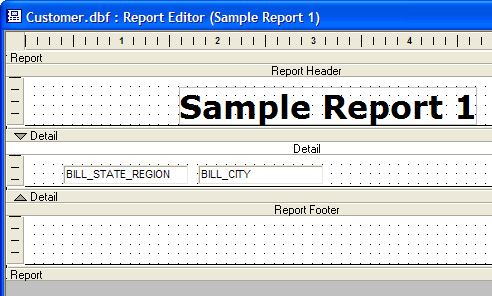
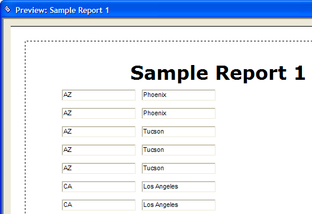
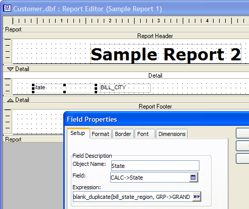
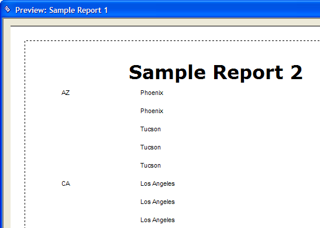

BLANK_DUPLICATE()
Syntax
BLANK_DUPLICATE( Expression as A, [ GRP
Argument | Description | |
Expression | Any valid expression that includes a field or a combination of fields from the current table or set that specifies what you want to examine. | |
GRP | Optional. When to use the function (instead of on every record). | The Group and Sub_Group are optional parameters that define the range of records to summarize, and may or may not be required, depending upon the context of the summary calculation. Possible values for GRP
|
GRP | Optional. When to reset the value produced by the function to 0 (instead at the end of all records). | |
Description
BLANK_DUPLICATE() removes repeating instances of a field value that occur in a sequence of two or more records.
The Expression is evaluated for all the records in the Sub_Group that are related to the current record of the Group, and if two or more records have identical expression values. Only the first record's value is returned; the other duplicate records return a blank (empty) string.
For example, to summarize the line-items in an invoice set, the Group parameter might be GRP
If you use this summary function in a report layout, the group name can be the name assigned to any of the report's grouping levels.
Limitations
This function is a report writer function, not intended for table level field rules or other expressions. While the function may perform in some areas outside of the Report Editor, its use there is not supported.
Example
Assume that you have a customer table for which you want like to create a report listing all your customers by state, showing the state next to the name only in the first instance of a new state. Instead of placing the bill_state_region field in the report, create and place the following calculated field:
blank_duplicate(CUSTOMER->STATE, GRP |
The report with the bill_state_region and bill_city fields.

Previewing the report.

The report with the a calculated field substituted for bill_state_region.

Previewing the report.

See Also